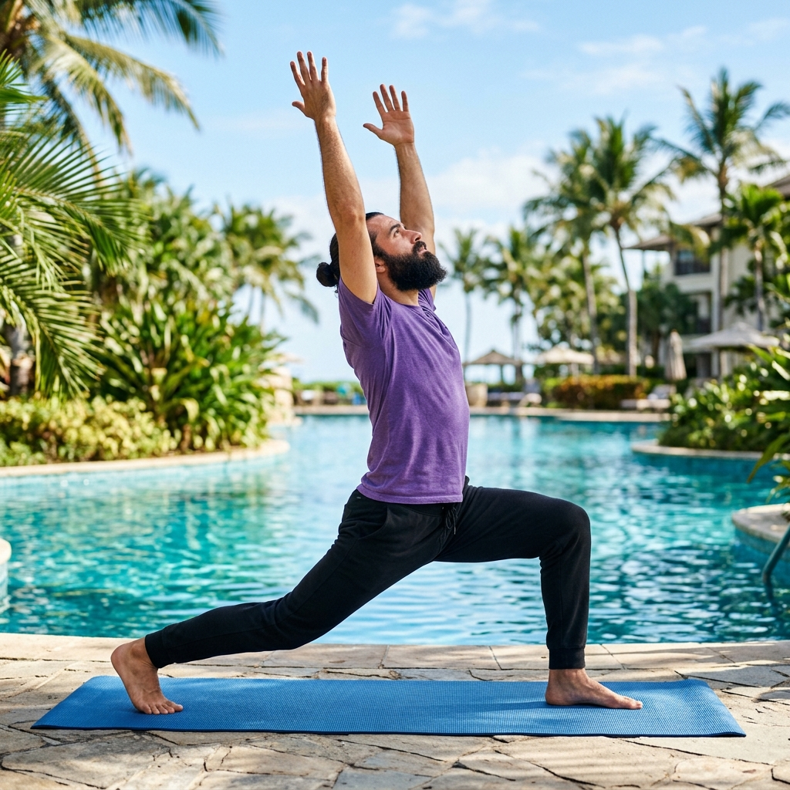
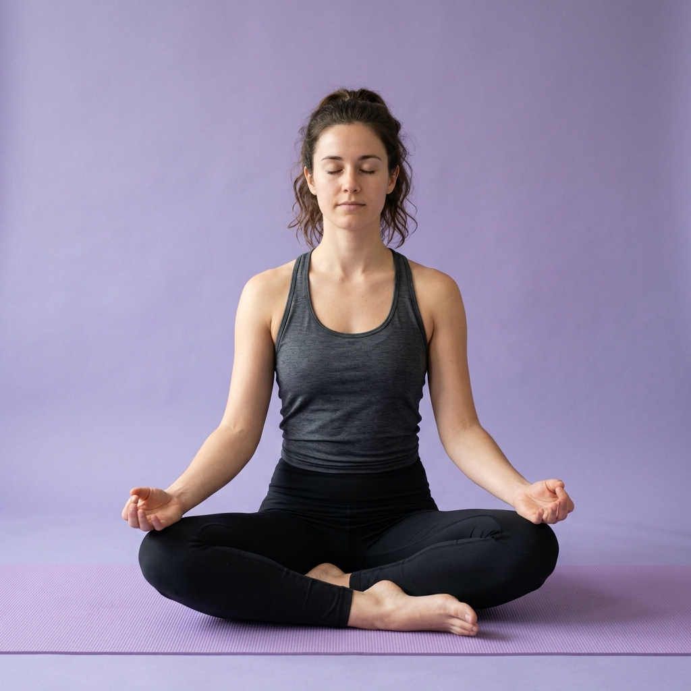
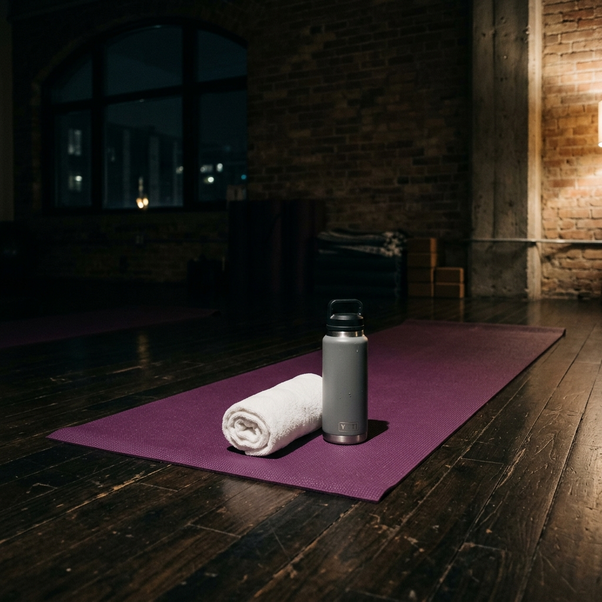

Find your balance,
inside and out.
Mindfulness is the simple practice of being fully aware in the moment. Our guide helps you explore the connection between your body and mind through yoga and meditation, designed for your everyday life.

Ancient Wisdom,
Modern Vitality
Yoga is not just a physical practice; it is a technology for the soul. By aligning the body, we create a vessel for higher consciousness. This guide focuses on the foundational pillars of Hatha and Vinyasa.
08+
Core Foundations
24
Minute Sessions
Essential Foundations

Crescent Lunge
ANJANEYASANABalancing in this pose enhances your balance and body awareness. The Crescent Lunge pose also boosts lower-body strength and activates core muscles to improve stability.
- • Step your right foot forward, keeping your left foot back and heel lifted.
- • Bend your front knee to form a 90-degree angle while keeping your back leg straight.
- • Ensure you keep your knee on top of the ankle to avoid pressure.
- • Raise your arms overhead, elongating your spine.
Physical
Improves posture and firms abdomen.
Spiritual
Develops steady awareness.

Sukhasana
EASY POSE- Sit on your mat with your legs crossed.
- Rest your hands on your knees, with palms facing upwards.
- Sit up well and relax your shoulders.
- Soften your eyes and maintain a smooth and steady breath.
Pranayama
Integration
Breathing is the bridge between the body and the mind. Learn how to pair each movement with Ujjayi breath.

Balasana
Child's Pose is a restful position that centers, calms and soothes the brain, making it a therapeutic posture for relieving stress.
Sacred Mudras
Ancient hand gestures that guide the energy flow to specific areas of the brain. Often used during Tadasana or seated meditation to deepen the spiritual connection.